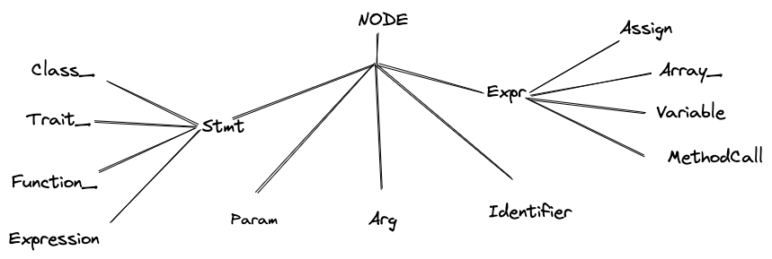
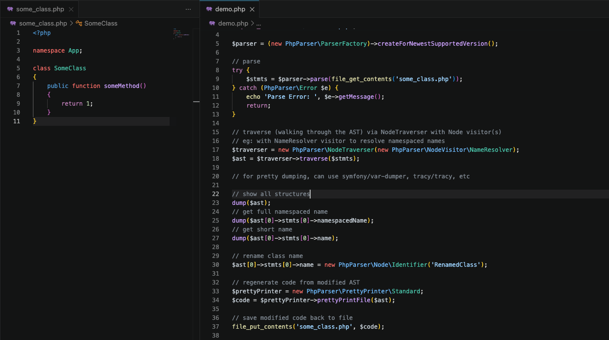

A PHP parser written in PHP. Its purpose is to simplify static code analysis and manipulation.
Data structure that represent structure of program.


Example can be found at: https://github.com/samsonasik/php-parser-usage-demo/Thank You! Questions?